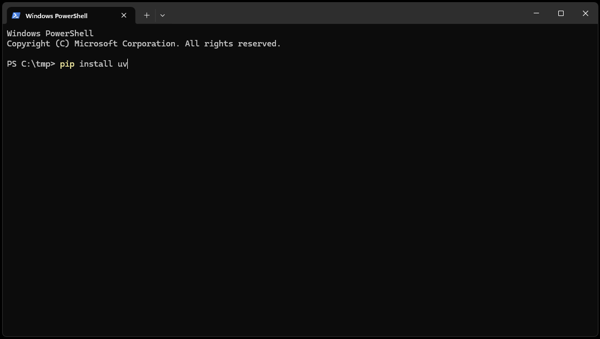
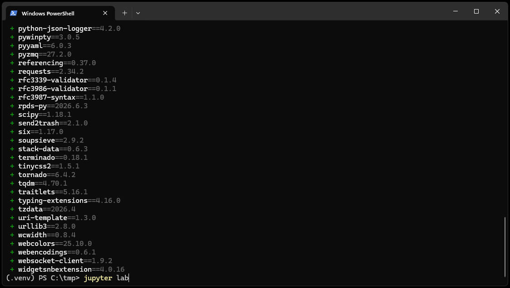

Installing Python
This guide explains how to install Python on Windows.
Installing Python on Windows
The current Python documentation recommends the Python Install Manager for installations obtained directly from the Python project.
Open the Python downloads page:
Download the Python Install Manager.
Open the downloaded installation file.
Follow the installation instructions.
Open a new Command Prompt or PowerShell window.
Verify the installation:
python --version
Getting Started
This course uses uv to manage Python packages and environments.
Start by going to the directory where you want to create your course environment.
Tip
You can open a terminal in the desired directory by holding down the Shift key, right-clicking in the folder, and selecting Open PowerShell window here.
Then, install uv by running the following command in your terminal or command prompt:
pip install uv
It should look something like this:

Once uv is installed, you can create a new environment by running the following command:
uv venv .venv
After installation, active the environment by running:
.venv/Scripts/activate
Note
If you are using Command Prompt, you may need quotes around the command, use ".\.venv\Scripts\activate" instead.
Once you have activated the environment a (.venv) prefix will appear in your terminal, indicating that the environment is active. You can now run Python code and install additional packages as needed. Install the required packages for this course, including Jupyter Lab, by running:
uv pip install jupyterlab gwrefpy pastas tqdm ipywidgets tornado==6.4.2
and start Jupyter Lab by running:
jupyter lab
You terminal should look something like this:

After executing the jupyter lab command an instance of Jupyter Lab will open in your default web browser, where you can create new notebooks or open existing ones.
Additional information on installing and using Jupyter Lab can be found in the official docmumentation.
Continue to Jupyter Notebooks to run the final checks.